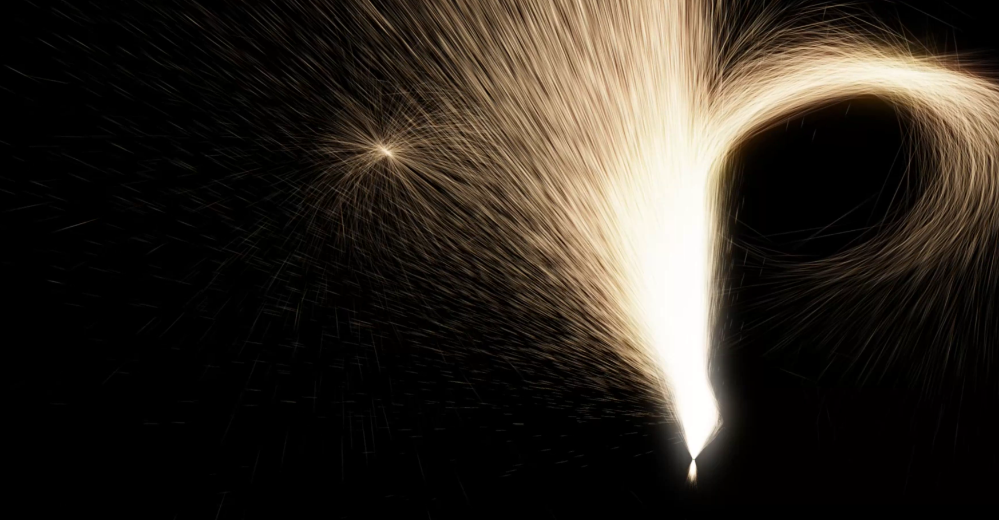
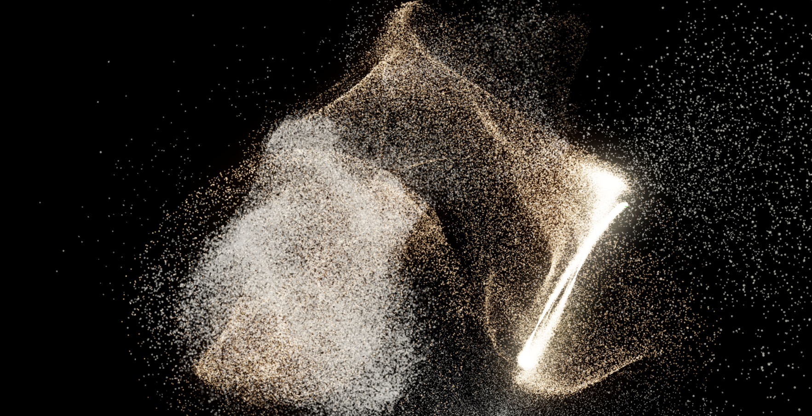
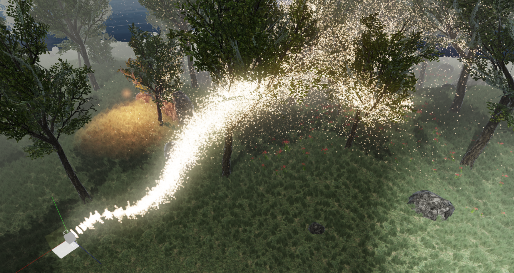

GPU-based particle simulation

I finally took the leap and threw out my old CPU-based particle simulation code and ventured to GPU realms with it. The old system could spawn particles on the surface on a mesh with a starting velocity of each particle modulated by the surface normal. It kept a copy of each particle on CPU, updated them sequentially, then uploaded them to GPU for rendering each frame. The new system needed to keep the same set of features at a minimum, but GPU simulation also opens up more possibilities because we have direct access to resources like textures created by the rendering pipeline. It is also highly parallellized compared to the CPU solution, both the emitting and the simulation phase which means we can do a much higher amount of particles in the same amount of time. There is less data moving between the system and GPU, we can get away with only a single constant buffer update and command buffer generation, the rest of the data lives completely in VRAM. This makes simulation on a massive scale a reality.
If that got you interested, check out the video presentation of my implementation in Wicked Engine:
So, the high level flow of the GPU particle system described here is the following:
- Initialize resources:
- Particle buffer with a size of maximum amount of particles [ParticleType*MAX_PARTICLE_COUNT]
- Dead particle index buffer, with every particle marked as dead in the beginning [uint32*MAX_PARTICLE_COUNT]
- 2 Alive particle index lists, empty at the beginning [uint32*MAX_PARTICLE_COUNT]
- We need two of them, because the emitter writes the first one, simulation kills dead particles and writes the alive list again to draw later
- Counter buffer:
- alive particle count [uint32]
- dead particle count [uint32]
- real emit count = min(requested emit count, dead particle count) [uint32]
- particle count after simulation (optional, I use it for sorting) [uint32]
- Indirect argument buffer:
- emit compute shader args [uint32*3]
- simulation compute shader args [uint32*3]
- draw args [uint32*4]
- sorting compute shader arguments (optional) [uint32*3]
- Random color texture for creating random values in the shaders
- Kick off particle simulation:
- Update a constant buffer holding emitter properties:
- Emitted particle count in current frame
- Emitter mesh vertex, index counts
- Starting particle size, randomness, velocity, lifespan, and any other emitter property
- Write indirect arguments of following compute passes:
- Emitting compute shader thread group sizes
- Simulation compute shader thread group sizes
- Reset draw argument buffer
- Copy last frame simulated particle count to current frame alive counter
- Update a constant buffer holding emitter properties:
- Emitting compute shader:
- Bind mesh vertex/index buffers, random colors texture
- Spawn as many threads as there are particles to emit
- Initialize a new particle on a random point on the emitter mesh surface
- Decrement dead list counter atomically while getting last value, this is our new dead particle index, read the dead list on that location to retrieve the particle index for the particle buffer
- Write the new particle to the particle buffer on this index
- Increment alive particle count, write particle index into alive list 1
- Simulation compute shader:
- Each thread reads alive list 1, and updates particle properties if particle has life > 0, then writes it into alive list 2. Increment Draw argument buffer.
- Otherwise, kill particle by incrementing dead list counter and writing particle index to dead list
- Write particle distance squared to camera for sorting (optional)
- Iterate through force fields in the scene and update particle according (optional)
- Check collisions with depth buffer and bounce off particle (optional)
- Update AABB by atomic min-maxing particle positions for additional culling steps (optional)
- Sorting compute shader (optional):
- An algorithm like bitonic sorting maps well to GPU, can sort a large amount
- Multiple dispatches required
- Additional constant buffer updates might be required
- Swap alive lists:
- Alive list 1 is the alive list from previous frame + emitted particles in this frame.
- In this frame we might have killed off particles in the simulation step and written the new list into Alive list 2. This will be used when drawing, and input to the next frame emitting phase.
- Draw alive list 1:
- After the swap, alive list 1 should contain only the alive particle indices in the current frame.
- Draw only the current alive list count with DrawIndirect. Indirect arguments were written by the simulation compute shader.
- Kick back and profit 🙂
- Use your new additional CPU time for something cool (until you move that to the GPU as well)
Note: for adding particles, you could use append-consume structured buffers, or counters written by atomic operations in the shader code. The append-consume buffers might include an additional performance optimization hidden from the user, which is GDS (global data share) for the hardware that supports it. Basically it is a small piece of fast access memory visible to every thread group located on a separate chip instead of the RAM. I went with the atomic counter approach and haven’t tested performance differences yet. The append-consume buffers are not available in every API which makes them less appealing.

The following features are new and nicely fit into the new GPU particle pipeline:
- Sorting
- I never bothered with particle sorting on the CPU. It was already kind of slow without it, so I got away with only sorting per-emitter, so farther away emitters were drawn earlier. I decided to go with bitonic sorting because I could just pull that from the web. This is a bit too involving and though that it would consume too much time to implement on my own and debug. AMD has a really nice implementation available. Sorting becomes a required step if the particles are not additively blended because threads are now writing them in arbitrary order.
- Depth buffer collisions
- This is a very nice feature of GPU particle systems. This is essentially a free physics simulation for particles which are on the screen. This only involves reading the depth buffer in the simulation phase, checking if the particle is behind it, and if it is, then read the normal buffer (or reconstruct normal from depth buffer) and modulate particle velocity by reflecting it with the surface normal.
- Force fields
- This is completely possible with CPU particle systems as well, but now we can apply them to a much bigger simulation. In the simulation compute shader we can preload some force fields to LDS (local data share) for faster memory access.
- Emit from skinned mesh
- Mesh skinning is done on the GPU nowadays, so using the skinned meshes while emitting becomes trivial, with no additional cost whatsoever.
- Async compute
- Now I still haven’t had a chance to try any async compute, but this seems like a nice candidate for that because simulation could be very much decoupled from rendering and it could lead to better utilization of GPU resources. Async compute is available in the modern low level graphics APIs like DX12, Vulkan and console specific APIs. It also requires hardware support which is available only in the latest GPUs.

Debugging
Debugging a system which is living on the GPU is harder than on the CPU but essential. We should ideally make use of a graphics debugger software, but there are also opportunities to make our life easier with creating some utilities for this purpose. The thing that helped me most is writing out some data about the simulation to the screen. For this, we need to access the data which is resident on the GPU, which we can do as if we were downloading something from a remote machine. Using the DirectX 11 API, we can do this by creating a resource of the same type and size that we want to download and creating it with D3D11_USAGE_STAGING flag, no bind flags and READ CPU access. We have to issue a copy into this buffer from the one we want to download by calling ID3D11DeviceContext::CopyResource, then read the buffer contents by mapping it with READ flags. As the buffer contents will only be available when the frame is finished with rendering until that point, we can either introduce a CPU-GPU sync point and wait in place until the operation completes or do the mapping a few frames later. In a debugging scenario, a sync point might be sufficient and simpler to implement, but we should avoid any such behaviour in the final version of the application.
Drawing
Drawing billboards would be seem like a nice place to use geometry shaders. Unfortunately, geometry shaders introduce inefficiencies in the graphics pipeline, because of various reasons. Primitives need to be traversed and written to memory serially, some architectures even go as far as writing the GS output to system memory. The option of my choice is just leaving the geometry shader and doing the billboard expansion in the vertex shader. For this, we must spawn the VS with a triangle list topology, vertex count of particleCount * 6 and calculate the particle index and billboard vertex index from the SV_VertexID system-value semantic. Like this:
static const float3 BILLBOARD[] = {
float3(-1, -1, 0), // 0
float3(1, -1, 0), // 1
float3(-1, 1, 0), // 2
float3(-1, 1, 0), // 3
float3(1, -1, 0), // 4
float3(1, 1, 0), // 5
};
VertextoPixel main(uint fakeIndex : SV_VERTEXID)
{
uint vertexID = fakeIndex % 6;
uint instanceID = fakeIndex / 6;
Particle particle = particleBuffer[aliveList[instanceID]];
float3 quadPos = BILLBOARD[vertexID];
// ...
}Additionally, for better drawing performance, you should use indexed drawing with 4 vertices per quad, but that way the two index lists will be six times the size each, so bandwidth will increase for the simulation. Maybe it is still worth it, I need to compare performance results.
Conclusion:
There are many possibilities to extend this system, because compute shaders make it very flexible. I am overall happy with how this turned out. Provided my previous particle systems were quite simplistic, porting all the features was not very hard and I haven’t had to make any compromises. The new system frees up CPU resources which are more valuable for gameplay logic and other systems which are interconnected. Particles are usually completely decoupled from the rest of the engine so they are an ideal candidate for running it remotely on a GPU.
You can check the source code of my implementation of GPU-based particles in Wicked Engine:
- Command buffer generation on CPU
- Kick off particle update compute shader
- Emitting compute shader
- Simulation compute shader
- Billboard drawing vertex shader
Feel free to rip off any source code from there! Thank you for reading!
Inspiration from: